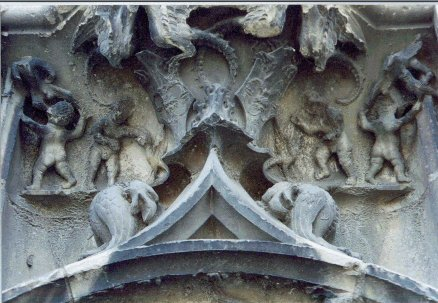
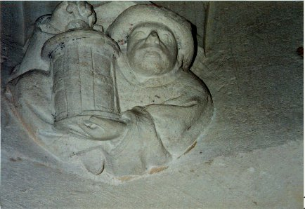
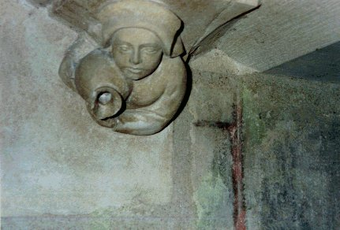
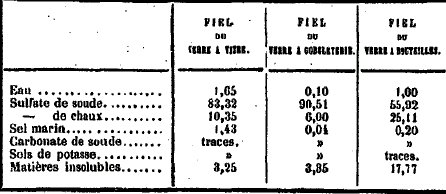
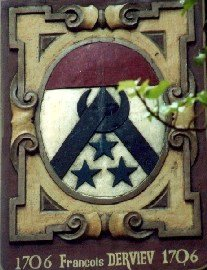

Emblema XX.
revu le 9 février 2003
Naturam natura docet, debellet ut ignem.
(La nature enseigne à la nature à combattre le feu1.)
La flamme, ce dragon qui tout dévore, brûle
D’altérer la beauté charmante de la vierge2.
Elle est baignée de pleurs, quand un homme la voit,
Court à l’infortunée en lui offrant son aide ;
Lui tendant son écu3, il marche à l’ennemi
Et lui enseigne à mépriser de tels assauts.
C'est, chez les philosophes, un symbole commun et un signe de reconnaissance mutuelle, que la nature guide la nature, l’enseigne, la gouverne, la domine, comme la maîtresse son élève, la dame sa suivante, la reine sa sujette, disons même la mère sa fille et la parente sa parente. L’expérience quotidienne montre le degré de vérité de cet adage dans l’éducation des enfants, parmi les hommes et dans d’autres actions comme l’enseignement des lettres, l’exercice de l’autorité, etc. Pline dit des rossignols que, tandis qu’ils chantent, ils s’instruisent mutuellement, s’écoutent, s’observent, s’imitent, se vainquent, se plaignent lorsqu’ils sont vaincus, et que, parfois, l’un d’eux ayant connu la défaite, sa gorge se brise, il périt et tombe au milieu de son chant. Nous voyons aussi comment les oiseaux de toutes espèces habituent et préparent progressivement au vol leurs petits encore tendres et démunis de plumes, pour que non seulement la nature, mais également l’art et l’expérience placent en eux l’habitude du vol, bien que seule la nature leur ait donné le pouvoir et les organes nécessaires pour exercer cette action, sans lesquels ni l’apprentissage ni l’art n’auraient de place ou de fondement. Ainsi la jument apprend la course aux poulains, le chien enseigne à ses petits à aboyer, le renard montre ses tours aux siens. On ne rencontre aucune nature, aucune espèce naturelle, animée et sensible, qui ne conduise, instruise et gouverne une autre nature, à savoir ses petits, et qui ne souffre d’être dominée de son côté par une autre nature, sa mère. Chez les végétaux nous ne remarquons pas de règle semblable ; on observe cependant que l’habitude et la main de l’homme ont sur eux un grand pouvoir. Car pendant que la moisson est en herbe, on peut la débarrasser des chardons inutiles et de l’ivraie, pendant que l’arbre est encore une tige mince on peut le couper et le contraindre à volonté pour le faire croître.
De même dans les métaux et les sujets philosophiques une nature en maintient une autre dans le feu, l’y conserve et l’y protège. Cela est connu des fondeurs et des vérificateurs de métaux, maîtres de choix dans le domaine des choses naturelles. Lorsque l’argent et l’or sont encore tendres et spirituels, comme ils disent, mélangés dans leurs minières à la cadmie, l’arsenic et l’antimoine ravisseur4, le fer qu’on leur ajoute est d’une grande utilité et remplit l’office d’accoucheur, si on le jette dans le feu des fours avec les minerais à brûler. Pareillement, si le fer lui-même doit être transformé en acier, on le protège, pour qu’il ne soit pas consumé, au moyen de cailloux blancs trouvés sur le bord de la mer5. Certains, pour empêcher que les poudres métalliques que l’on veut rendre liquides ne soient détruites par un feu excessif, jettent dessus de la poudre de verre cristallin, ou fiel de verre. Les philosophes utilisent à la place leur Eudica qui, selon Morien,
« est aussi du fiel de verre et doit être cherchée dans des vases de verre. La chaleur du feu, en effet, consume rapidement le corps lui-même mais on y ajoute de l’Eudica ; celle-ci mettra à l’abri de toute combustion les corps changés en terre. En effet lorsque les corps ne retiennent plus leurs âmes, ils sont rapidement consumés : mais l’Eudica (fèces du verre), convient parfaitement à tous les corps ; elle les vivifie, les adapte et les défend de toute combustion "6.
Telles sont les paroles de Morien le Romain7. C’est donc la nature qui apprend à une autre nature à combattre contre le feu, et a s’accoutumer à lui ; c’est la maîtresse qui instruit son élève, et, si l’on observe bien, la reine qui gouverne sa sujette et la fille qui anoblit sa mère. C’est le serviteur rouge qui est uni par le mariage à sa mère odoriférante et engendre d’elle une descendance beaucoup plus noble que ses parents8. C’est Pyrrhus, le fils d’Achille, jeune homme à la rouge chevelure, au vêtement d’or, aux yeux noirs, aux pieds blancs9. C’est le chevalier au collier, armé du glaive et du bouclier contre le dragon10, afin d’arracher de sa gueule la vierge inviolée Albifica surnommée Beya ou Blanche. C’est Hercule, le tueur de monstres, qui libéra Hésione, fille de Laomédon, exposée à l’horrible monstre marin11. C’est l’illustre Persée qui défendit contre le monstre marin Andromède, fille de Cassiopée et de Céphée, roi des Ethiopiens et, l’ayant délivrée de ses liens, fit d’elle son épouse. Il peut être comparé aux antiques libérateurs et purificateurs romains, M. Curtius, L. Scaevola, Horatius Codés, Manlius Capitolinus et leurs semblables, étant donné qu’il délivre, comme eux, des périls une ville, qui est en quelque sorte sa mère.
Telles sont en effet la manière d’agir et la voie de la nature lorsqu’elle poursuit la perfection d’une œuvre quelconque, qui est de faire sortir une chose d’une autre, la plus parfaite de la moins parfaite, et de la faire passer de la puissance à l’acte, sans tout accomplir en même temps, mais en faisant une chose après une autre. Et non seulement cela, mais surtout elle institue aussi un Vicaire d’elle-même à qui elle confie le pouvoir de vie et de mort, c’est-à-dire le pouvoir de former d’autres êtres. Par exemple, dans la génération de l’homme, elle utilise un long processus qui s’étend sur dix mois, au cours duquel elle forme d’abord le cœur comme son vicaire et le viscère principal ; mis le cœur dessine, façonne et mène à la perfection les autres membres nécessaires à la nutrition, la vie, les sens et la faculté de génération ; il leur distribue la vie et les souffles vivifiants par la systole et la diastole, ou dilatation et compression des artères, tant qu’il n’est pas empêché par les maladies et la violence. Ainsi une nature instruit une autre nature, ce que tu devras noter et suivre comme un très clair exemple de l'œuvre philosophique.
Notes1. Cette phrase énigmatique perd son caractère ésotérique si l'on a une idée du sujet de l'oeuvre et des matières employées. Le maître mot est ici le FEU. Que l'on considère comment sont formés les minéraux dans le sein de la terre. A partir de sels simples, comme des chlorures, des sulfates et des carbonates, et grâce à l'aide d'émanations volcaniques ou encore de l'eau sous pression à forte température, la nature accomplit ce travail : la cristallisation. Dire que la nature aide la nature veut donc très simplement exposer qu'il faut mettre dans un vase adéquat les composants nécessaires. Avaec l'aide du feu, et surtout du temps, la nature oeuvrera seule aux confections de l'Art. Voyez les Mémoires sur le Métamorphisme des roches de Gabriel-Auguste Daubrée et d'Achille Delesse.

FIGURE I
(cour du Palais Jacques-Coeur, Bourges - les gnomes s'affairent dans les entrailles de la Terre - cliché Alain Mauranne)La figure I, s'il était besoin, nous enseignerait que ces Niebelungen antiques recherchent l'Or des Philosophes, à l'instar des gnomes dont parle Fulcanelli au tome II de ses Demeures Philosophales. Le signe du FEU est répété ici en écho par trois fois pour qui a des yeux de Lyncée.
2. Pernety nous dit :Vierge. Lune ou eau mercurielle des Philosophes après qu'elle a été purifiée des soufres impurs et arsenicaux auxquels elle avait été mariée dans sa mine. Avant cette purification, elle est nommée la Femme prostituée. Les Adeptes ont donné à cette Vierge le nom de Beja; et l'Auteur de l'Œuvre secret de la Philosophie Hermétique dit, que sans donner atteinte à sa virginité, elle a pu contracter un amour spirituel avant que de s'unir par un mariage avec son frère Gabritius, parce que cet amour spirituel ne l'a rendue que plus blanche, plus pure, plus vive et plus propre à l'objet du mariage. Prenez donc, ajoute-t-il (Can. 58), une vierge ailée, très pure et très nette, pénétrée et animée de la semence spirituelle du premier mâle, et néanmoins vierge quoiqu'elle ait conçu; vous la connaîtrez à ses joues vermeilles; joignez-la à un second mâle, sans crainte d'adultère; elle concevra de nouveau par la semence corporelle du second, et mettra enfin au monde un enfant Hermaphrodite, qui sera la source d'une race de Rois très puissants. Ils ont encore appelé Aigle cette vierge ailée, et le second mâle Lion. Voyez ces deux articles. [Dictionnaire]Il est très difficile de savoir ce que veut dire exactement Pernety. Nous savons qu'il existe deux Lunes dans l'oeuvre. La première correspond au Sel des Sages ; la seconde est le Mercure philosophique. L'eau mercurielle telle que nous la présente Pernety voit son sens occulté. Car le Mercure n'est pas une confection de la nature même si, évidemment, les éléments dont il est constitué sont présents dans les minières ou même à fleur de terre. Dire que l'eau mercurielle est celle qui est purifiée des soufres impurs n'est donc guère compréhensible. En effet, s'il s'agit du Mercure, nous lui connaissons deux états : le premier Mercure, comparé à Arès, instable sans l'infusion des Soufres. Dissous dans le Mercure, ceux-ci l'animent et le transforment en Mercure philosophique. Or, c'est l'opération inverse qui est évoquée par Pernety. Si l'on en tient toujours pour le Mercure, il faut qu'il s'agisse alors de l'époque de la réincrudation des Corps, mais cete époque est tardive dans l'oeuvre, car elle ne survient qu'à une phase avancée de la Grande coction. Cette réincrudation marque l'apparition de Délos et c'est en ce sens que l'on peut supputer que s'entende la naissance de l'hermaphrodite. Mais au stade où Pernety nous décrit cette substance mystérieuse, il est peu probable qu'il s'agisse du Mercure. Quant à la seconde Lune, elle correspond, on l'a dit, au Corps de la Pierre, appelé Sel par Paracelse et plus anciennement connu sous le nom d'Arsenic par Geber. Or, nous pouvons mettre un nom sur cette mystérieuse substance : c'est le Soufre blanc. Ce soufre blanc [Sel, Corps, Arsenic] est effectivement dans un état impur au sortir de la mine, quand il en existe une. Pour aider l'étudiant à trouver ce sel, nous lui dirons que Fulcanelli parle dans le Mystère des Cathédrales d'un certain vitriol romain, vitriol dont parle aussi Tripied. Quand on le trouve pas dans sa mine, on le trouve, ce qui est nettement plus fréquent, sous forme d'efflorescences ou encore sous forme d'une matière lamelleuse et friable dont on peut le tirer en arrosant le minéral. L'EAU va alors mettre littéralement le FEU à la TERRE et laissera couler, ainsi que le dit exactement Fulcanelli, une onde puante que les alchimistes désignent par de « grossières terrestréités ». C'est à l'Artiste d'oeuvrer alors pour récolter le précieux Sel, ce qui ne pourra se faire qu'après lixiviations répétées. Mais on peut aussi tirer le sel d'une terre spéciale qui explique là encore le rapport au potier que suggère Fulcanelli. Voyez la section du Mercure, au chapitre de la porcelaine, pour en savoir plus. Au XVIIIe siècle, le chimiste Macquer [cf. idée alchimique, IV] avait eu cette substance en main, suite à sa découverte fortuite par un pharmacien de la région de St Yriex. C'est cette substance qui représente Beja et qu'il faut savoir marier à son frère Gabricius. Et c'est là l'objet de la Grande coction.


FIGURE II
(Palais Jacques-Coeur - intérieur - le SEL - cliché Alain Mauranne)Ici, ce n'est pas moins de deux hiéroglyphes qu'il faut pour pouvoir, afin de respecter les règles de la cabale, exprimer l'essence du SEL incombustible dont l'Artiste a besoin pour façonner le Corps de sa Pierre. La lanterne [lumen] et la cruche [urceus] permettent de donner le nom de ce corps que chacun foule au pied.
3. Le sens du mot écu a varié au cours de siècles. Il s'agit d'un bouclier de forme quadrangulaire ou triangulaire. Cet arcane a déjà été analysé. Voyez surtout : 1, 2, 3, 4, 5, 6, 7, 8, 9, 10- Par sa forme, l'écu accuse la forme de la TERRE et par son symbolisme - cf. l'égide, Zeus - les trois principes de l'oeuvre. L'écu, c'est aussi une pièce de monnaie [Atalanta, XVIII]. Et l'écu, c'est enfin le corps de tout blason, qui, précisément, est en forme de bouclier. Pour les blasons, reportez-vous à la section héraldique.
4. Allusion à ce que les anciens chimistes appelaient le « loup des métaux », car l'antimoine déplace tous les métaux hors mis l'or et l'argent. Voyez le Char Triomphal de Basile Valentin.
5. Ces cailloux contiennent du carbonate de potasse ou de soude qui agit comme un corps réducteur.
6. sur le fiel de verre, voir la section Matière. Le fiel de verre n'est pas sans rapport avec le Mercure des Sages. Voici ce que nous en dit Girardin, dans sa Chimie minérale, traitant des métaux :Quant aux matières qui ne peuvent pas fondre complètement ou qui sont étrangères à la constitution du verre, telles que sulfates de soude et de chaux, sel marin, matières insolubles, elles se séparent peu à peu, montent à la surface de la matière fondue sous forme d'écumes qu'on enlève avec des outils de fer : ce sont elles qui composent le fiel de verre des ouvriers. Voici ce que j'ai trouvé dans trois échantillons de fiel de verre :
TABLEAU ILes matières insolubles consistent en silicates de chaux, d'alumine, de fer, de sable, verre et traces de phosphates de chaux. Le fiel de verre est utilisé comme fondant en docimasie et dans certaines industries métallurgiques. Dans plusieurs verreries, on a essayé de le faire servir de nouveau à la fabrication du verre, en le mélangeant, en certaines proportions, avec les autres matières premières ; il remplace alors une quantité correspondante de sulfate de soude.Comme on le voit, c'est le fiel de verre à bouteille qui contient le plus de ces matières insolubles. On ne peut nier qu'il y ait là quelque analogie avec la « sanie » que nous présentent certains textes, ni qu'il y ait là aussi, une sublimation. Le lecteur au fait de nos hypothèses sur le Mercure, n'aura pas manqué de remarquer la similitude des substances présentes dans le fiel de verre et celles qui sont indispensables au grand Magistère. Il suffira d'ajouter que l'un des textes les plus anciens du Corpus alchimique, les Entretiens du roi Calid à Morien, contient déjà une allusion explicite au fiel de verre. Nous réservant de parler ailleurs de ce point de science, nous ajournerons ici nos réflexions sur cette écume. Parlons plutôt de l'Eudica. Pernety n'est pas avare de détail sur cette mystérieuse substance :Eudica. Matiere du grand œuvre des Philosophes Chymiques. 0 bon Roi ! dit Morien, vous devez savoir parfaitement avant toutes choses, que la fumée rouge, et la fumée blanche, et la fumée orangée, et le lion vert, et Almagra, et l’immondice du mort, et le limpide, et le sang, et I’Eudicu, et la terre fétide, sont des choses dans lesquelles consiste tout le magistère. Morien explique dans la suite ce que c’est qu’Eudica. Eudicu, dit-il, est la chose la plus secrète de toutes celles que je viens de nommer. On l’appelle autrement Moszhacumia, ce qui signifie féces ou immondices du verre. Il ne faut cependant pas s’imaginer que Morien entende par ces termes, les excréments ou superfluités hétérogènes qui se trouvent dans les creusets des Verreries : c’est la base de tous les êtres, et par conséquent du verre. C’est la pierre au blanc.Comme d'habitude avec Pernety, il faut être circonspect dans la lecture de ses commentaires, mais dans l'ensemble, nous serons moins sévères que Georges Ranque qui estimait que les textes de Pernety étaient prolixes [la Pierre Philosophale, Robert Laffont, 1970]. Non. Pernety était parfois vrai dans l'erreur et d'autres fois, faux dans le vrai. Ici, nous avons sans doute un exemple du second type. Nous avons été amenés dans d'autres sections, rappelons-le, à développer l'hypothèse selon laquelle le Mercure des Philosophes tiendrait d'un sel de potassium. Mais que ce sel, tout seul, ne servait de rien, et qu'il fallait nécessairement qu'il soit mêlé d'un sel de chaux, qui représentait Thémis [la Justice] à cause de ses propriétés de corps réducteur [La Parole Délaissée]. Jacques-Joseph Ebelmen a fait voir par ses belles expériences de synthèse cristalline que le phosphate de chaux pouvait également s'avérer constituer un sel idoine. Eh bien ! Nous sommes conduits à penser que Morienus n'a pas été envieux, en professant que l'Eudica [Eudicu] consistait tout unîment dans les fèces du verre. Or, chose étrange, ce mot, Eudica renvoie en grec à deux termes : eudika et eudioV. Eudika a le sens de justice [bon droit] et eudioV, celui de ciel serein, calme : les alchimistes n'ont jamais cessé de d'affirmer que leurs opérations devaient se faire les nuits de pleine lune, dans un ciel calme, afin, disaient-ils, que la rosée de mai [de majus, moi de Zeus] soit au mieux captée [voyez la planche IV du Mutus Liber, l'emblème peut-être le plus connu des amoureux de science]. Peut-être certains lecteurs triuveront-ils que nous avons ici dépassés les bornes de la cabale hermétique ? A eux d'en juger ! Les paroles de Morien [Morienus à Calid] confirment que les fèces du verre agissent à l'instar d'un médiateur qui permet de faire demeurer dans le Composé des composés les Âmes des métaux morts...
EUDICA. (SC. Hem.) Eau mercurielle des Philosophes, faite pour défendre le corps de la terre de combustion, ce qui lui a fait donner par Morien le nom de fiel ou fèces de verre, parce que les fèces de verres mêlées avec les métaux en fusion, empêchent qu’ils ne soient brûlés. C’est cet Eudicu qui accoutume la matière aux atteintes du feu. C’est ce serviteur rouge qu’il faut marier avec sa mère odorante; ce Pyrrhus, fils d’Achille, aux cheveux rouges, aux yeux noirs, et aux pieds blancs. Ce Chevalier armé pour combattre le Dragon, et lui arracher la vierge intacte Beja, ou blanche; Persée qui en présentant la tête de Méduse, défend Andromède, fille de Cassiope et de Céphée Roi d’Ethiopie, contre le Monstre matin, la délie des chaînes qui la retenaient, et la prend pour épouse.
EUDICA. Quelques-uns croient qu’il faut entendre ce terme de la matière au blanc; d’autres, avec le Philalethe, l’expliquent de la matière en putréfaction. [Dictionnaire]
FIGURE III
(blason, rue de La Juiverie dans le Vieux Lyon près la Cathédrale Saint Jean : illustration du fiel de verre - cliché Alain Mauranne)Ce fiel de verre est composé de trois substances qui sont symbolisées par les trois étoiles. Le rôle de ce fiel est clairement indiqué par le signe du FEU. Le croissant lunaire entrelacé au feu est le signe du Mercure. Ainsi qu'en témoigne d'ailleurs le métal [argent] en pointe ; la carnation du chef en pourpre indique la rubification.
7. cette insistance a de quoi faire réfléchir. Mais le bon lecteur des textes hermétiques sait que « tous les chemins mènent à Rome ». Qu'il consulte donc sur le vitriol romain les sections suivantes : 1, 2, 3, 4, 5, 6, 7, 8, 9, 10, 11, 12, 13, 14-
8. C'est le mariage des contraires que Maier a ici en vue. Et cette union ne peut avoir lieu sans le médiateur qui prend la forme d'un vicaire chez Basile Valentin [Douze Clefs].
9. sur Pyrrhus, voir Pernety :Pyrrhus. Fils d'Achille et de Déidamie, fut aussi appelé Néoptolème. Après la mort de son père tué par Paris, il se rendit au siège de Troye, parce qu'une des destinées de cette ville portait qu'elle ne pourrait être prise si un des descendans d'Eaque n'y assistait. Pyrrhus y tua Priam au milieu de ses Dieux, et précipita le jeune Astianax, fils d'Hector, du haut d'une tour; et comme Polyxene avait été la cause de la mort d'Achille, il l'immola sur son tombeau. De retour de cette expédition, il épousa Hermione, fille de Ménélas et d'Hélène, quoique déjà fiancée à Oreste, ce qui lui coûta la vie, car Oreste le tua devant l'autel d'Apollon. Voyez les Fables Egypt. et Grecq. dévoilées, liv. 6. [Dictionnaire]Que de symboles et d'allégories nouvelles à étudier...Pyrrhos, le Roux, désigne parfois Néoptolème, fils d'Achille et de Deidamie [sans doute parce que Pyrrhos avait les cheveux roux]. A partir de ce XXème chapitre de l'Atalanta fugiens, il devient clair que Michel Maier va se servir du symbolisme de la guerre de Troie comme illustration des arcanes du grand Magistère [sur Pyrrhos, cf. Atalanta XLIV]. Il précède, en cela, Dom Pernety, dont nous n'avons cessé ici de mesurer l'importance. Que Pernety ait pesé faux avec des poids justes, soit. Que ses textes aient été prolixes, là, nous ne sommes point d'accord avec Georges Ranque, qui est bien prêt de prendre l'esprit pour la lettre. Pour l'heure, nous retiendrons que Pyrrhus fut élevé à la cour de son aïeul maternel, Lycomède, roi de Scyros [certains critiques sont allés jusqu'à dire que toute l'Atalanta fugiens ne serait qu'une vaste épopée hermétique de la fille d'un roi de Scyros sous la forme d'épigrammes successives]. Un oracle ayant alors déclaré que la ville de Troie ne pouvait être prise s'il n'y avait parmi les assiégeants quelqu'un des descendants d'Eaque, les Grecs envoyèrent chercher Pyrrhus qui, à cette époque, n'avait que dix-huit ans. A peine arrivé à Troie, il fut chargé d'accompagner Ulysse et Diomède à Lemnos [terre de Lemnos : 1, 2-], afin de décider Philoctète à venir avec les flèches d'Hercule rejoindre l'armée des Grecs. Pyrrhus portait un anneau où l'on voyait Apollon et les neuf Muses. Cet anneau était probablement un rubis...
10. L'image du chevalier au bouclier est une allégorie de l'Artiste. Nous avons étudié cette image dans les sections Gardes du Corps et St Grégoire-sur-Vièvre. On retrouce ce chevalier dans de nombreuses gravures des anciens traités [De Lapide Philosophorum, où on le voit opposé au dragon, etc.]
11. Voyez là-dessus la section Fontenay.